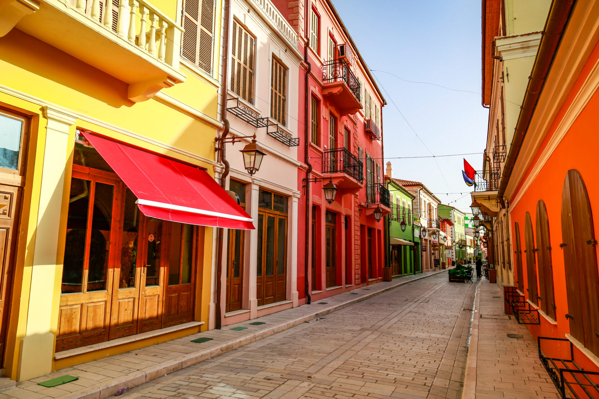
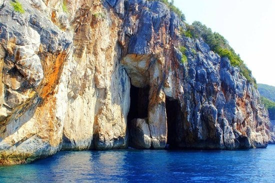
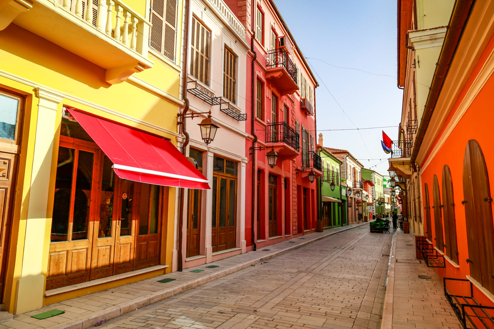
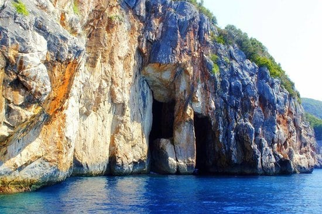

Welcome to Albania
Explore the natural beauty, historic landmarks, and unique culture of Albania. Your next adventure awaits!
Explore the GemsExplore the natural beauty, historic landmarks, and unique culture of Albania. Your next adventure awaits!
Explore the GemsThe city of a thousand windows, with the most unique architecture and endless history.
The Bazaar of serenates. One of the most beautiful cities of Albania, especially in the Winter.
Albania's capital city since 1920. One of the most modern cities of Albania.
Click Here to learn more!

An ancient city and UNESCO World Heritage site. Located by the coast it is also Albania's 2nd Seaport.
Albania's 'Stone City', an amazing city, filled with history. Also an UNESCO World Heritage site.


 


